To my favorite person, always
Our Story
Chapter One.
From one braided hairstyle in an MBA classroom to Sunday biryani rituals, bus journeys, and a thousand tiny jokes — somehow, you became my favorite story.
The beginning of us
It was never just a date.
Our story began on 29 July 2025, with one braided hairstyle that caught my attention, then took its first little step on 12 August through a charging extension spot and a banana emoji on WhatsApp. From that first conversation to our first kiss and the day we officially became us, every date marks another page in my favorite story.
The girl with the braid
I saw you sitting on the front bench in our MBA class. While everyone else seemed a little intimidating and unapproachable, you looked so simple, quiet, and traditional. I noticed your braided hair, and somewhere in that first look, I started liking you. I had no idea then how much that small moment would come to mean to me.
An extension spot, a WhatsApp message, and 🍌
That day, we had our first conversation because of a charging extension spot. Then you sent the first WhatsApp message — with a banana emoji 🍌. Such a tiny, funny beginning, but it became the first conversation of a story that means the world to me. Sometimes everything starts with the smallest hello.
Our first kiss ❤️
Our first kiss — a small moment that became a permanent part of my heart. The world carried on as usual, but for me, that memory would always make the STS bench feel like more than just a bench. Some moments stay with you long after they are over; this one always will.
The first time you proposed to me
You made the first move and trusted me with your feelings. I will always remember that you were brave enough to open your heart to me first. This date became one of the first big turning points in our story — a moment I still hold close.
Our first visit to the Hanuman Mandir
We visited the Hanuman Mandir at NIT for the first time together. I love that our story holds not only dates and jokes, but also quiet moments of faith and time spent side by side. I hope we keep finding places that become special simply because we went there together.
The day we officially became “us” ❤️
I finally proposed to you, you accepted, and we officially began our relationship. This is the date that gave our story its name. If I could revisit one page just to feel that happiness again, this would always be one of them. Happy anniversary, my Mango kulfi. ♥
Your first gajar halwa made for me 🧡
You made gajar halwa for me for the first time, and it meant more than just a sweet dish. There is something so tender about someone making something with you in mind. I hope you know that I remember the care behind it as much as the taste.
Your first bus journey — for me
You weren't used to travelling by bus, but you did it for me. I am genuinely sorry for the trouble that journey brought you, and I appreciate the effort and love behind it more than I can say. I hope one day we remember it and smile at how far we were willing to go just to spend time together.
Roses at 5 AM, and our RM Hall stairs date 🌹
You woke up at 5 in the morning and brought roses for me. Then, in the evening, we had our own cute date night on the RM Hall staircase. No fancy restaurant could replace the feeling of being thought of so lovingly. You made an ordinary place feel like a scene I will replay in my heart for years.
Our first Mahashivratri together
We went to the mandir at 5:30 AM, and at night we broke our fast together with the five-course meal you brought for us. It was faith, care, and togetherness wrapped into one day. Thank you for making that first Mahashivratri ours, and for looking after me in such a thoughtful way.
The first time I visited your home
I visited your home and met your family members for the first time — and honestly, I was on cloud nine. Being welcomed into a part of your world felt so special. It was one of those days when my happiness was too big to hide, and I knew I was collecting a memory I would treasure.
A cake, a celebration, and your special day 🎂
I was so excited to celebrate you that I brought a cake, and we celebrated in front of CVR Hostel. I wanted your birthday to feel special because you are special to me. I hope you remember not just the cake, but how happy I was to celebrate another year of you being in this world.
Mandir together, and green bangles 💚
We went to the mandir together for Shravan Somvar, and I gave you green bangles. A simple gift, a meaningful day, and another memory that feels like us. I love the little traditions and symbols that become precious because they are shared with you.
A year since your first proposal
One year had passed since the day you first proposed to me. This day became deeply special for us as we shared a very personal moment, felt closer than ever, and promised to keep choosing one another. Some memories belong gently and privately to two people; what matters most to me is the love, trust, and promise we carried away from that day.
Chicken biryani is our love language 🍗
Our Sunday chicken biryani ritual deserves its own place here. It might look like a simple meal to anyone else, but to me it is one of our little traditions — a familiar table, our usual order, and another ordinary Sunday made better because I get to share it with you.
Fruit negotiations & bathroom jokes 😂
You don't like eating fruit, and I keep trying to convince you anyway. And then there is our legendary poop joke about me making at least three trips a day. We really can turn the most random things into relationship lore. I wouldn't trade our silly little jokes for anything.
So many memories still waiting for us
There are more memories than I could ever fit into one timeline — little calls, laughs, difficult days, unexpected kindness, and moments only we would understand. This page is only a glimpse. The real story is still being written, one ordinary and extraordinary day at a time.
Twelve little truths about us
12 reasons you are so special.
Twelve reasons for twelve months of memories — and a bond that feels written in the stars, as if our souls found their way to each other for a reason.
Because that braided hairstyle in our MBA classroom became the first little sign that something extraordinary was beginning.
Because one charging extension cable and a banana emoji 🍌 turned an ordinary day into the beginning of us.
Because the courage and honesty you showed on 16 October 2025 became a beautiful turning point in our story.
Because 7 November 2025 gave us our own little world — two hearts choosing to walk through life side by side.
Because even the RM Hall stairs became magical when they held our laughter, roses, and our little date-night memories.
Because care lives in the smallest things, like a lovingly brought Mahashivratri meal and the thought behind it.
Because our first kiss on the STS bench is a tiny forever tucked safely inside our story.
Because every bus journey reminds us that love can make even an unfamiliar road feel worth travelling.
Because Sunday chicken biryani at Calorie Restaurant is our delicious little tradition — simple, familiar, and completely us.
Because fruit negotiations, silly bathroom jokes, and teasing each other turn ordinary moments into our own private comedy.
Because faith, family, celebrations, and quiet promises keep weaving our lives together in ways that feel bigger than coincidence.
Because you are my Mango kulfi and our bond feels heaven-sent — not perfect because life is perfect, but special because we keep choosing us. ♥
Little pieces of forever
Our memories, in pictures.
A few frames from our little universe — the dressed-up days, the silly selfies, the flowers, and the quiet moments that feel like home.
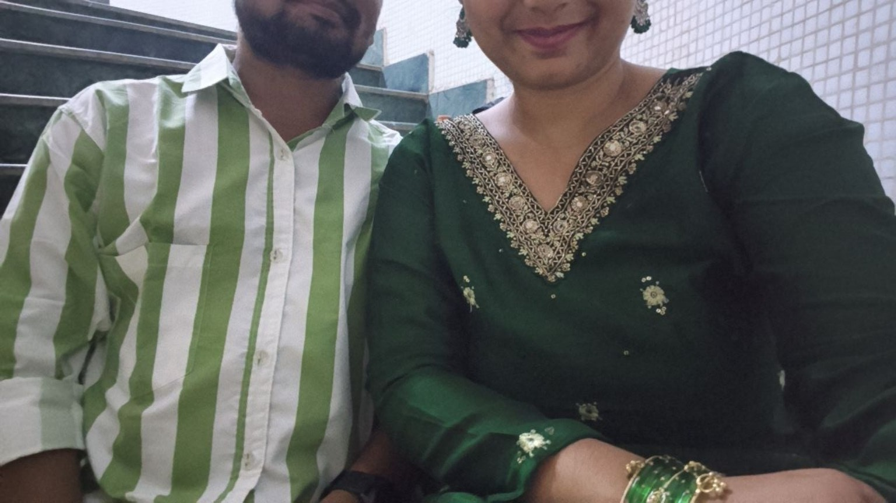
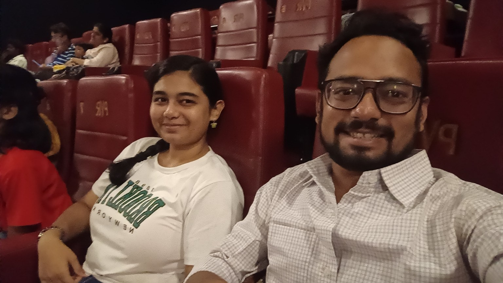
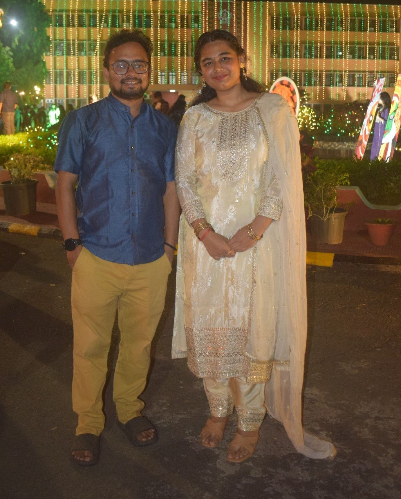
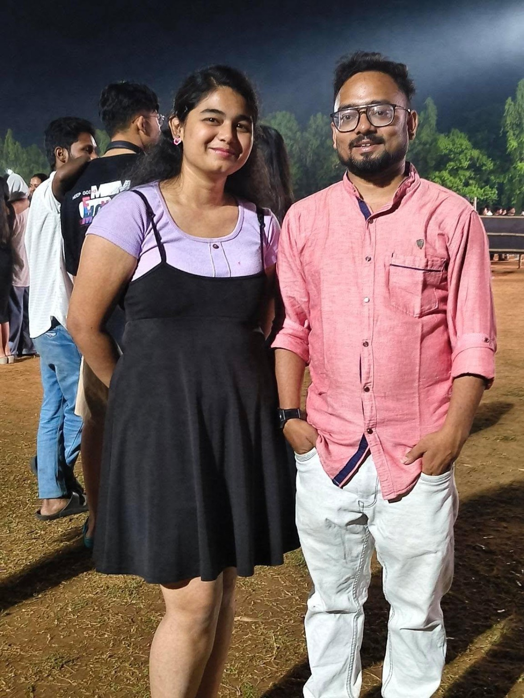
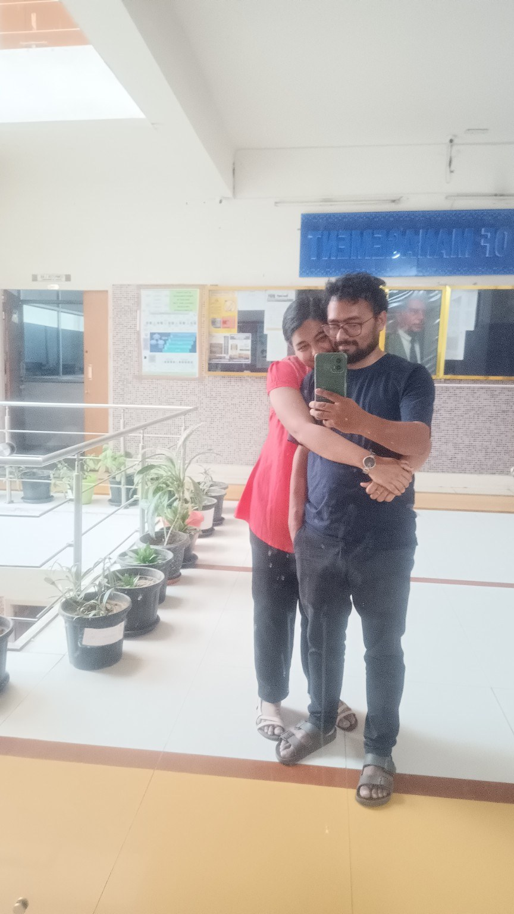
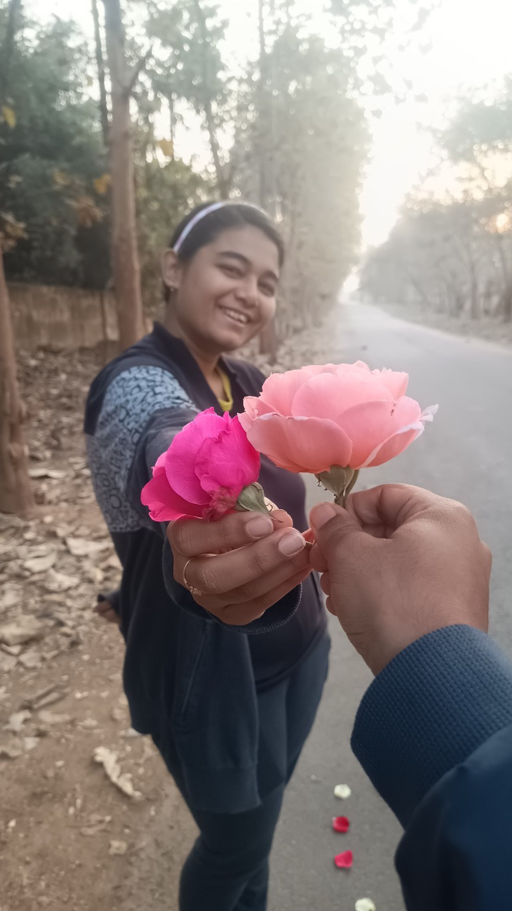
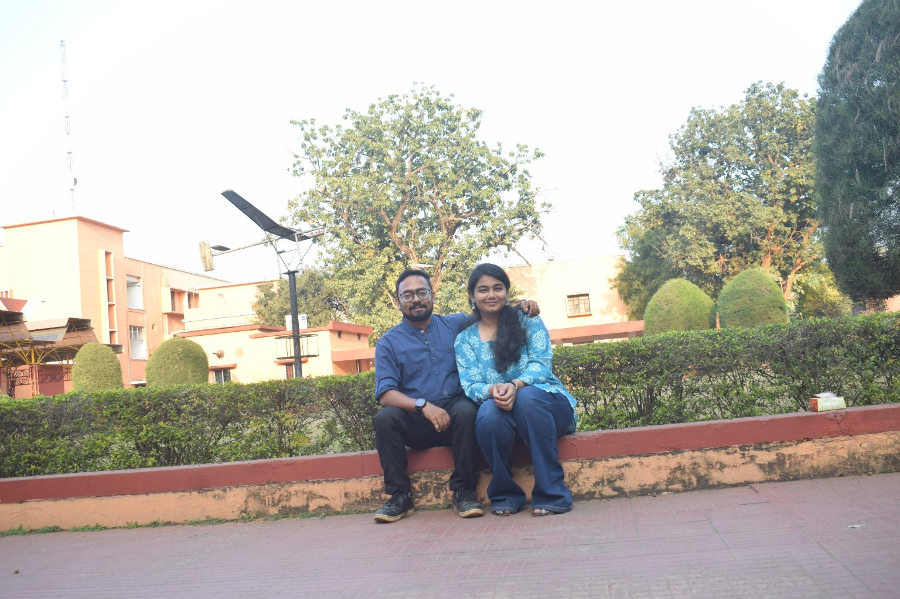
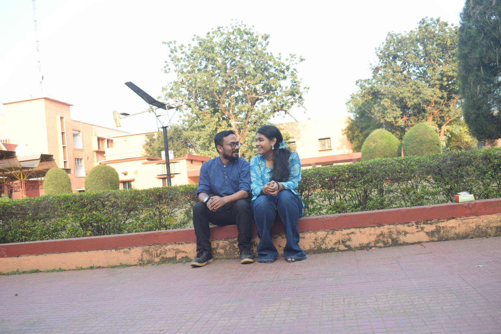
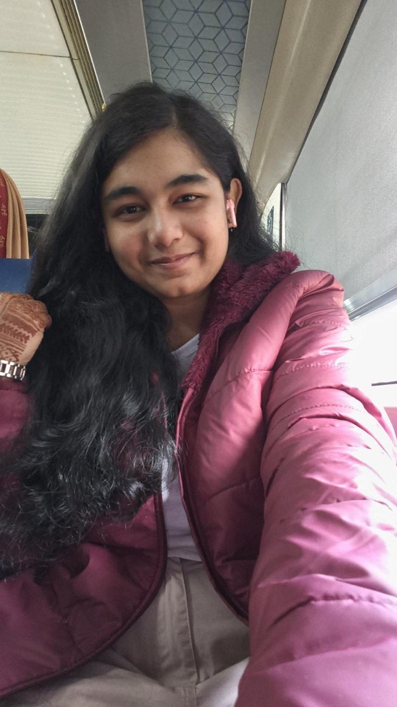
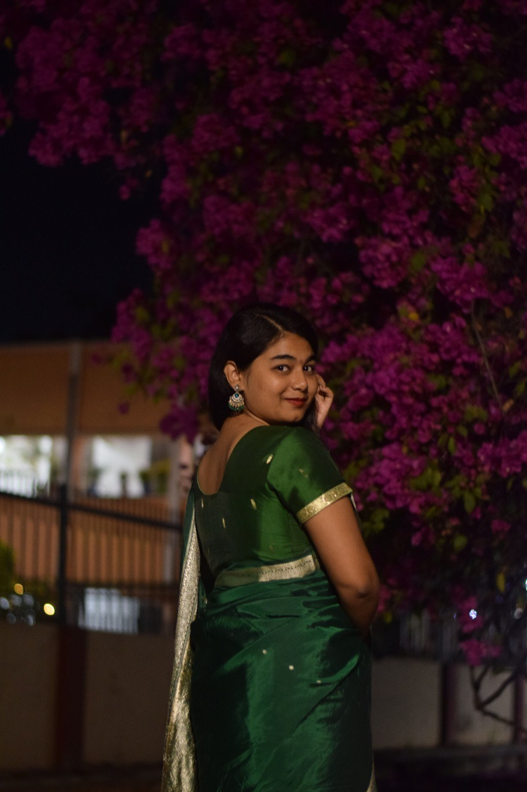
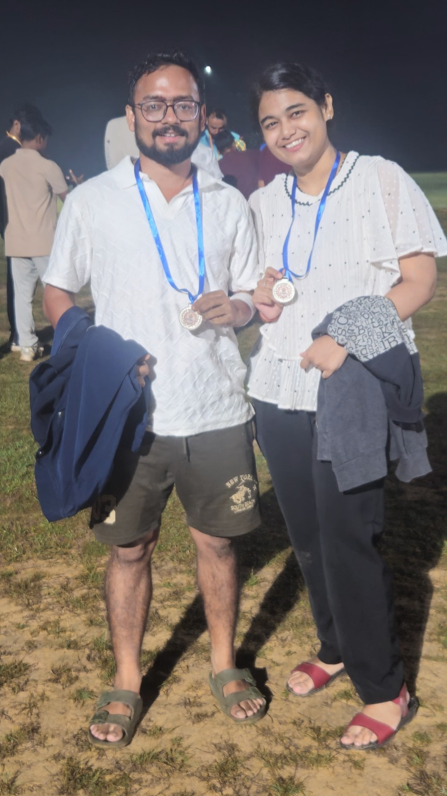
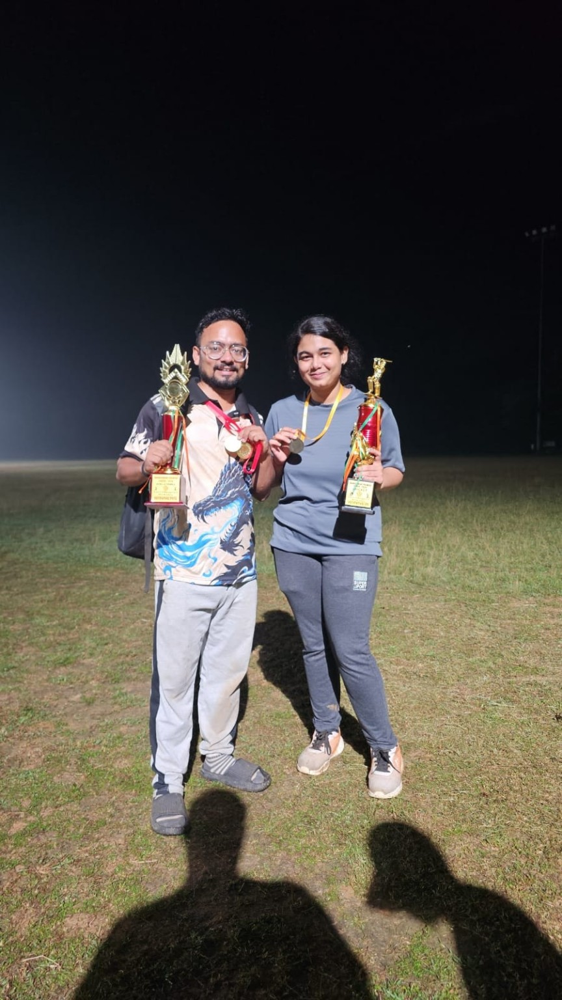
Ten little snapshots, and still nowhere near all the memories I want to keep with you.
Please read this slowly
A letter for my Jamunuuuuu.
If I could give you one thing for our first anniversary, it would be the chance to see yourself through my eyes — even for a minute. Maybe then you'd understand why the smallest things about you can mean so much to me.
I still remember that braided hairstyle in our MBA classroom. I had no idea that a girl I noticed in one moment would become the person connected to so many of my favorite memories. Then came the extension cable, that one banana in our WhatsApp chat, your proposal on 16 October 2025, and my proposal on 7 November — the day we officially became us. Somehow, all those little scenes became our story.
I think about our Valentine's date on the RM Hall stairs, the five-course meal you brought on Mahashivratri, our first kiss on the STS bench, and all those bus journeys we shared. I think about our Sunday chicken biryani at Calorie Restaurant, our fruit negotiations, and the jokes that would make absolutely no sense to anyone else. Those ordinary, ridiculous, beautiful moments are what make us us.
There are so many more memories than I could fit into this little website. Some are too personal, some are impossible to explain, and some are still waiting to happen. But I hope you feel the truth behind every word here: you matter to me, and our story matters to me.
I cannot promise that every day will be perfect. I can promise that I want to keep learning you, laughing with you, showing up for the little things, and making new memories with you. I want more Sundays, more silly jokes, more journeys, more celebrations, and more chapters that we get to call ours.
Happy first anniversary, my Jamunuuuuu. ♥
Yours, still falling for you.
One last little thing
For the next chapter.
Tap when you're ready. ♡